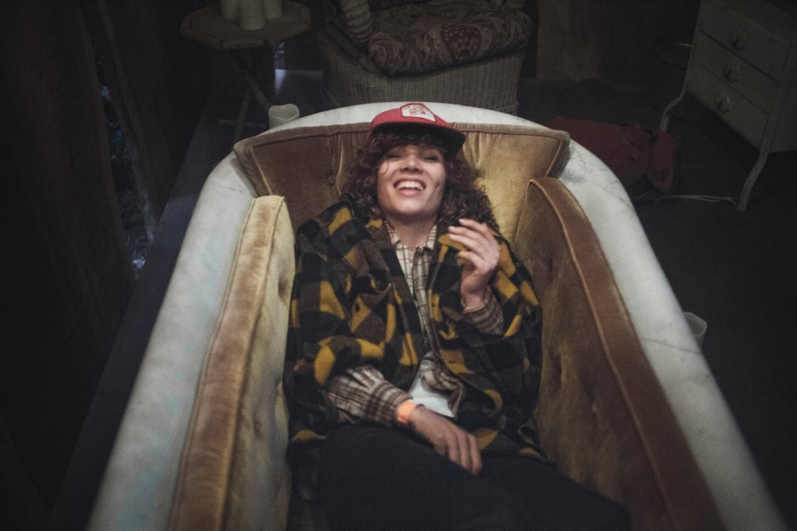

• Label

Amanda Bergman has touched people around the world with one of the warmest and most distinctive voices for over a decade. What began under the mysterious pseudonyms Hajen and Idiot Wind later culminated as the frontwoman of the supergroup and success story Amason and her own first solo album Docks. Since her debut in 2016, Amanda has managed to buy a farm in Dalarna, release three albums with Amason, win awards, tour, start the concert business "Rockbonden" and record an SVT documentary about life and the farm.
In the summer of 2024, Amanda Bergman released her second solo album Your Hand Forever Checking On My Fever, an album dominated by both atmospheric and loving twilight serenades, sprung from the hypersensitive breaking point between loss and gratitude that can occur during cataclysmic events. In this case, her father's passing in 2022, or really its entire pre- and post-event.
- Music - Shop - Tour - Socmed - Contact -